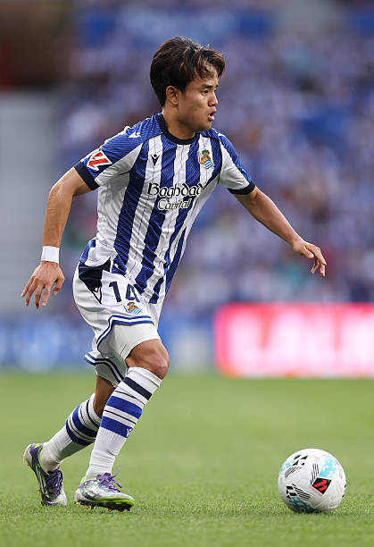

プロフィール詳細

| 名前 | 久保 建英（くぼ たけふさ） |
|---|---|
| 生年月日 | 2001年6月4日 |
| 出身地 | 神奈川県川崎市 |
| ポジション | MF / FW（主に右サイドハーフ、オフェンシブハーフ） |
| 所属クラブ | レアル・ソシエダ（スペイン） |
長文紹介：サッカー人生とキャリアの歩み
久保建英のサッカーキャリアは幼少期から世界から注目を集めていました。10歳でFCバルセロナの有名下部組織「ラ・マシア」に入団。その類稀なるフットボールIQと卓越したボールコントロールで着実にステップアップを重ね、「日本のメッシ」と称されるようになりました。
15歳でFC東京のトップチームに二種登録されると、Jリーグ史上最年少ゴールを記録。日本国内で圧倒的な成長を見せた後、2019年に18歳で名門レアル・マドリードへ移籍を果たしました。その後はマジョルカ、ビジャレアル、ヘタフェへの期限付き移籍を通じて、スペイン1部リーグでの実戦経験とタフさを身につけました。
転機となったのは2022年のレアル・ソシエダへの完全移籍です。イマノル・アルグアシル監督のもとで才能を爆発させ、チームの年間最優秀選手に選出されるなど、ラ・リーガ屈指のアタッカーとして確固たる地位を確立。日本代表としてもワールドカップやオリンピックで中心選手として大きなインパクトを残しています。
プレースタイルの特徴
彼の最大の武器は、**ファーストタッチの精度**と**圧倒的なアジリティ**です。相手ディフェンダーの間合いを外し、狭いスペースでもボールを奪われないキープ力を持っています。また、自ら得点を狙うだけでなく、味方の動きを活かす視野の広さとスルーパスの精度も超一級品です。近年では守備の強度や走力も大幅に向上し、現代サッカーに必要な要素をすべて兼ね備えた万能型のアタッカーへと進化を遂げています。